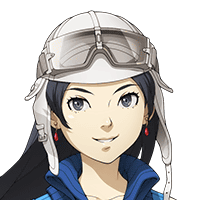

Shou-chan、 グラデンス爺さん、待ってたぜ。
あれ、Shou-chan、 ティリスは一緒じゃないの？
グラデンス
今回は直接、Shou-chanに 依頼したのでティリスちゃんは来ないぞ。
カル
セリアは相変わらずShou-chanには 厳しいんだな……。
グラデンス
フォッフォッフォッ、ところでカルよ。 そちらのお嬢さんたちはどなたじゃ？
カル
ああ、異界から迷い込んだらしくて 今回の事件に関係がありそうだから
カル
一緒にここで爺さんたちを 待たせてもらったんだ。


アサヒ
あたしは人外ハンターのアサヒ！ 仲間のナナシを探してるんだ。
セリア
“スマホ”っていうのを使って！ “アクマ”を召喚して！
カル
セリア、なんで少し怒ってるんだ……。 ちゃんとわかってるのか？
セリア
私たちが英霊を喚び出す代わりに アクマってのを喚び出すんでしょ！
ノゾミ
フフッ、そうね。 だいたいそれで合ってるわ。
ノゾミ
はじめまして。私の名前はノゾミ。 アサヒちゃんと同じ世界の者よ。
グラデンス
フォッフォッフォッ、はじめまして。 ワシの名はグラデンス。
グラデンス
アサヒちゃんとノゾミちゃんか。 ワシのことはグラ爺と呼んでくれ。
カル
この２人はグランガイアとは別の世界 “東京”で戦っていたらしい。
アサヒ
あたしたちは東京で世界を滅ぼす力を持った シェーシャっていう大蛇と戦っていたの。
ノゾミ
シェーシャは多くの人々の魂を喰らい 今も東京に存在し続けているわ。
ノゾミ
そして、それは次元を越える力をも 持っている。
アサヒ
あたしとノゾミさん、それに仲間のナナシは 一緒にシェーシャを倒すため動いていたの。
ノゾミ
気が付いたら私たち２人で この場所で倒れていたわ。
カル
そこを調査に出ていた俺とセリアが 発見して保護したってわけだ。
ノゾミ
彼も人外ハンターなら自分の力で どうにかしているはずよ。
ノゾミ
もしかしたら、私たちよりも先に 東京に戻っているかもね。
アサヒ
そうですよね！ ナナシなら大丈夫ですよね！
アサヒ
ナナシに心配かけないよう、あたしたちも 早く元の世界に戻らないと……。
カル
とはいえ、戻る方法がわからず 俺たちも困っていたってわけだ。
グラデンス
召喚院の調査報告と合わせれば なんとかなりそうじゃな。
グラデンス
フォッフォッフォッ、ワシもこの世界では そこそこ顔がきく方での。
グラデンス
今、グランガイアには異界からの強大な力と 魔神の力が同時に発生しておる。
グラデンス
アサヒちゃんたちの話を聞く限り、この 異界の力はシェーシャのものじゃろう。
グラデンス
どうやらそれらが共鳴して、おかしな力場を 発生させておるようなのじゃ。
カル
つまり、その魔神を倒せば２人は元の世界に 戻れるかもしれないということか？
グラデンス
異界と魔神の力は複数の場所で 感知されているのじゃ。
カル
つまり、どれを倒せばいいのか わからないってことか……。
セリア
そんな大した問題じゃないじゃない。 全部倒せばいいんでしょ？
アサヒ
フフッ、セリアさんって 頼りになりますね！
セリア
Shou-chan！ アンタまで笑わないの！
グラデンス
ふむ、ではあらためてカル、セリア、 Shou-chanに任務を与える。
グラデンス
グランガイアに侵入した異質な力と 危険な魔神を排除せよ。
ノゾミ
あなたたちの協力に感謝するわ。 正直、どうしたらいいか困っていたの……。
カル
なーに、困った時はお互い様さ。 それに、２人とも良い人みたいだしな。
セリア
あとは私たちに任せて！ 絶対に２人を元の世界に帰してあげるから！
グラデンス
フォッフォッフォッ、 さて、それではそろそろ出発するかの。
グラデンス
感知された力はこの先で二方向にわかれる。 まずはそこまでみんなで行くとするかの。
グラデンス
Shou-chanよ。 お主にも期待しておるぞ。
アサヒ
Shou-chan、 よろしくお願いします！
ノゾミ
私たちも足手まといにならない程度には 戦えるつもりよ。


{kind=link}
{kind=link}
{kind=link}